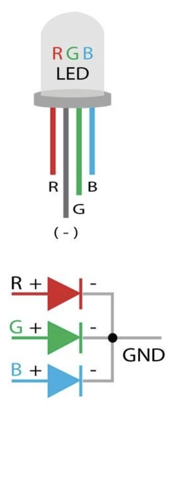
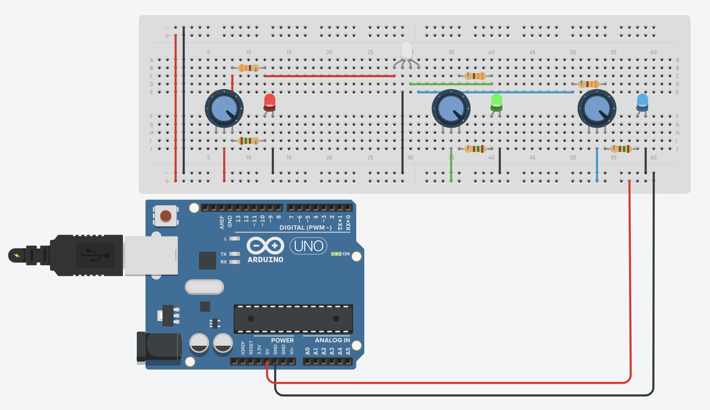
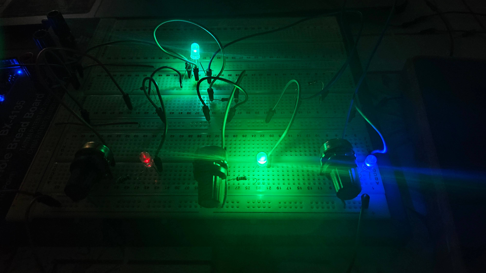
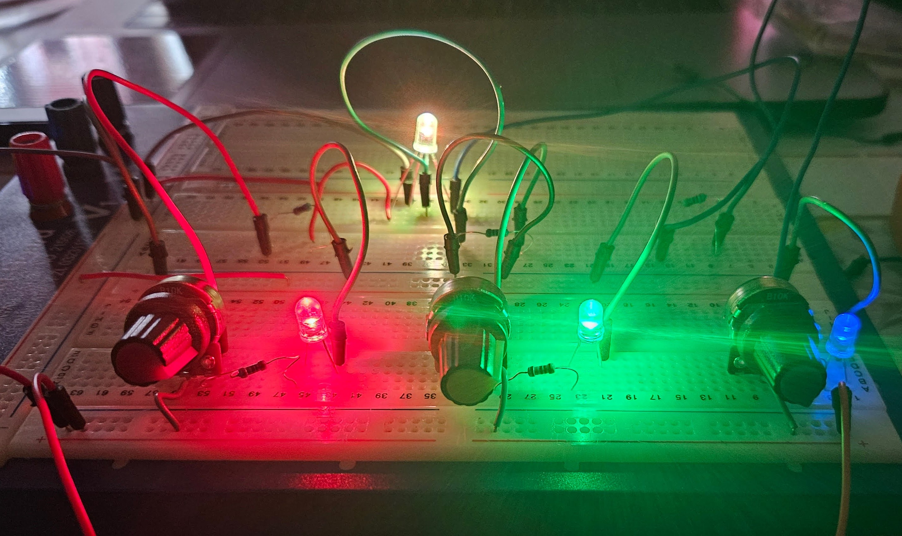
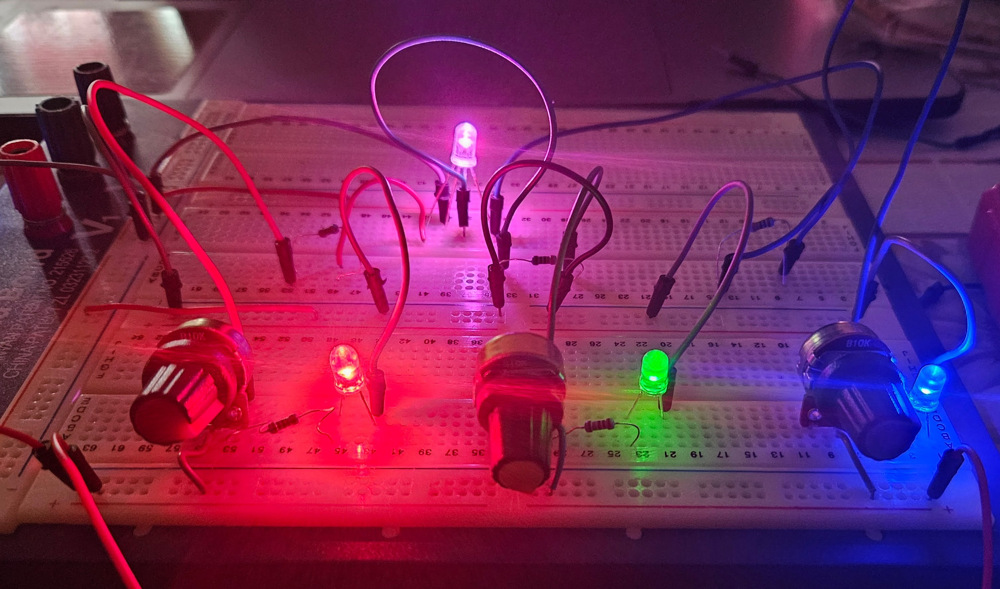
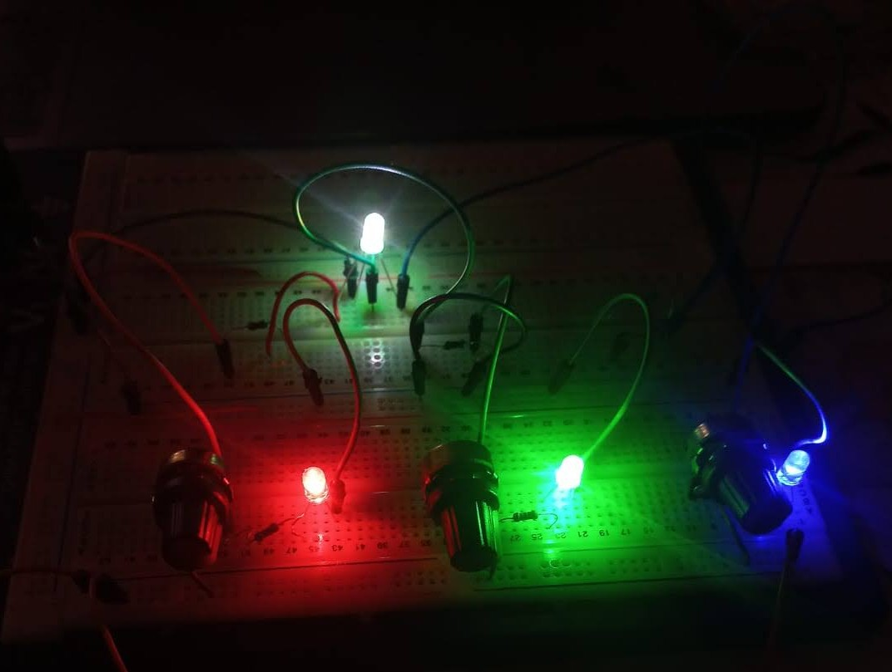

Il potenziometro è una resistenza variabile con tre terminali: due estremi e un cursore mobile (detto anche wiper). La resistenza totale tra i due terminali estremi è fissa (in questo circuito 10 kΩ), mentre la resistenza tra un estremo e il cursore varia linearmente con la posizione della manopola, da 0 Ω a 10 kΩ.
Quando i due terminali estremi sono collegati rispettivamente a +5V e GND, il cursore si comporta da partitore di tensione: la tensione sul pin centrale varia continuamente tra 0 V (cursore tutto verso GND) e 5 V (cursore tutto verso +5V). Questa tensione variabile è quella che, attraverso la resistenza di limitazione, controlla la luminosità del LED.

Il LED RGB è un singolo componente che contiene tre LED distinti — uno rosso, uno verde, uno blu — racchiusi nella stessa capsula trasparente da 5 mm. Ogni LED ha il proprio anodo (terminale positivo), ma condivide un unico catodo comune collegato a GND. Si tratta di una versione miniaturizzata di un pixel fisico: variando l'intensità dei tre canali si ottiene qualsiasi colore per sintesi additiva.
I quattro pin si identificano per lunghezza: il pin più lungo è il catodo comune (–). Guardando il LED di fronte con la lente verso di sé, i pin da sinistra a destra sono: R (anodo rosso) · Catodo (–) · G (anodo verde) · B (anodo blu). Le tensioni di soglia differiscono: ~2.0 V per R, ~3.2 V per G, ~3.4 V per B.
- Arduino Uno R4 (o alimentatore USB 5V) fonte di tensione 5 V
- Breadboard a 830 fori montaggio circuito
- Cavi jumper M-M collegamento componenti
- Multimetro digitale misura tensioni e correnti
- 1× LED RGB 5 mm a catodo comune pixel fisico
- 3× LED 5 mm separati (rosso, verde, blu) visualizzazione canali
- 3× Potenziometro lineare 10 kΩ controllo manuale R, G, B
- 3× Resistenza uguale (valore usato in questa esperienza) limitazione corrente

-
1
Alimentazione: il pin 5V di Arduino (o un alimentatore USB) fornisce la tensione di riferimento al bus positivo della breadboard; il pin GND si collega al bus negativo.
-
2
Potenziometri: il terminale sinistro di ciascun potenziometro va al bus 5V, il terminale destro a GND, il cursore centrale (pin 2) produce una tensione variabile tra 0 e 5 V.
-
3
Resistenza di limitazione: il cursore del potenziometro si collega all'anodo del LED attraverso la resistenza. Il catodo comune del LED RGB e i catodi dei LED singoli vanno tutti a GND.
-
4
LED singoli aggiuntivi: oltre al LED RGB, per visualizzare meglio ogni singolo canale, tre LED separati (rosso, verde, blu) sono collegati in parallelo ai rispettivi canali, ciascuno con la propria resistenza.
ℹ I LED singoli mostrano più chiaramente l'intensità di ciascun canale rispetto ai tre sub-pin ravvicinati del LED RGB.
-
1
Montaggio del circuito: realizzare il circuito come da schema, con i tre potenziometri, le resistenze di limitazione e il LED RGB collegati al bus 5V e GND.
-
2
Colori primari: portare un potenziometro al massimo e gli altri due a zero. Osservare il colore del LED RGB e dei singoli LED, misurare la tensione ai capi del LED attivo e la corrente nel ramo.
-
3
Colori secondari: portare due potenziometri al massimo, il terzo a zero. Verificare: R+G = Giallo, G+B = Ciano, R+B = Magenta. Fotografare i risultati.
-
4
Bianco: portare tutti e tre i potenziometri al massimo. Osservare la luce bianca emessa dal LED RGB (somma R+G+B). Misurare la corrente totale assorbita.
-
5
Raccolta dati quantitativi: per ciascun canale (R, G, B) variare il potenziometro in modo continuo e registrare nella tabella le tensioni e le correnti corrispondenti a diverse posizioni (0%, 25%, 50%, 75%, 100%).
-
6
Confronto col codice colore: impostare una combinazione a piacere e stimare il corrispondente codice HEX sommando le intensità relative. Verificare aprendo un selettore colori su PC.
⚠ L'approssimazione non è perfetta: la percezione dell'occhio non è lineare e le resistenze uguali introducono sbilanciamento tra i canali.
| Canale | Posizione POT% | TensioneV | Corrente ILEDmA | Luminosità percepitasogg. | |
|---|---|---|---|---|---|
| VPOT (cursore) | VLED (ai capi) | ||||
| Rosso (R) | 0 % | 0.00 | — | 0 | spento |
| 25 % | 1.25 | — | — | debole | |
| 50 % | 2.50 | ≈ 2.0 | — | media | |
| 75 % | 3.75 | ≈ 2.0 | — | intensa | |
| 100 % | 5.00 | ≈ 2.0 | — | massima | |
| Verde (G) | 0 % | 0.00 | — | 0 | spento |
| 25 % | 1.25 | — | — | spento* | |
| 50 % | 2.50 | — | — | debole | |
| 75 % | 3.75 | ≈ 3.2 | — | media | |
| 100 % | 5.00 | ≈ 3.2 | — | massima | |
| Blu (B) | 0 % | 0.00 | — | 0 | spento |
| 25 % | 1.25 | — | — | spento* | |
| 50 % | 2.50 | — | — | spento* | |
| 75 % | 3.75 | ≈ 3.4 | — | debole | |
| 100 % | 5.00 | ≈ 3.4 | — | media | |
* Il LED non si accende finché la tensione del cursore non supera Vf + caduta sulla resistenza. I valori con trattino (—) sono da completare durante la misura.
| Colore ottenuto | Canale RPOT % | Canale GPOT % | Canale BPOT % | Equivalente RGB0–255 | Codice HEXappross. |
|---|---|---|---|---|---|
| ■ Rosso | 100 | 0 | 0 | (255, 0, 0) | #FF0000 |
| ■ Verde | 0 | 100 | 0 | (0, 255, 0) | #00FF00 |
| ■ Blu | 0 | 0 | 100 | (0, 0, 255) | #0000FF |
| ■ Ciano | 0 | 100 | 100 | (0, 255, 255) | #00FFFF |
| ■ Giallo | 100 | 100 | 0 | (255, 255, 0) | #FFFF00 |
| ■ Magenta | 100 | 0 | 100 | (255, 0, 255) | #FF00FF |
| ■ Bianco | 100 | 100 | 100 | (255, 255, 255) | #FFFFFF |
| ■ Nero | 0 | 0 | 0 | (0, 0, 0) | #000000 |
Equivalente RGB (es. 255, 0, 0): è la tripletta di numeri interi — ciascuno compreso tra 0 e 255 — con cui ogni sistema informatico descrive un colore. Il valore 0 significa "canale spento", il valore 255 significa "canale al massimo". In questa fase dell'esperienza i valori sono assegnati in modo approssimato (0 = POT al minimo, 255 = POT al massimo) perché non disponiamo ancora di uno strumento di misura preciso.
Codice HEX (es. #FF0000): è la rappresentazione esadecimale della stessa tripletta RGB. Ogni coppia di cifre HEX corrisponde a un canale: #RRGGBB. Poiché in base 16 ogni coppia può rappresentare 256 valori (da 00 a FF), il codice HEX è semplicemente un modo più compatto di scrivere lo stesso dato RGB ed è il formato usato universalmente nei fogli di stile CSS, nei software di grafica e nei selettori colore dei sistemi operativi.
🔬 Il legame fisico–digitale tra queste due rappresentazioni e il circuito fisico sarà il tema centrale della seconda parte di questa esperienza: EXP E5.2 — Il Legame tra Pixel Fisico e Pixel Logico →
In quella scheda, grazie all'Arduino e al display OLED, vedremo come un valore ADC (0–1023) si trasforma in un numero RGB (0–255) e in un codice HEX in tempo reale, chiudendo il cerchio tra la luce fisica e il dato informatico.




| LED | Vf tipica | R ottimale (I = 20 mA) | R usata in questa esperienza | Corrente effettiva | Effetto |
|---|---|---|---|---|---|
| LED Rosso | ≈ 2.0 V | 150 Ω | uguale agli altri | alta (> 20 mA se R < 150 Ω) | Troppo brillante o rischio LED |
| LED Verde | ≈ 3.2 V | 90–100 Ω | uguale agli altri | accettabile | Vicino all'ottimale |
| LED Blu | ≈ 3.4 V | 80 Ω | uguale agli altri | bassa (< 16 mA se R > 80 Ω) | Troppo debole rispetto agli altri canali |
L'esperienza ha raggiunto il suo obiettivo principale: realizzare fisicamente un pixel RGB e verificare la sintesi additiva del colore. Con tre LED, tre potenziometri e tre resistenze è possibile riprodurre l'intero spazio cromatico che un display digitale rappresenta numericamente. Ogni posizione dei potenziometri corrisponde a un codice colore RGB e — con la versione Arduino dell'esperienza — a un preciso valore esadecimale su display OLED.
La differenza concettuale tra pixel fisico e pixel digitale è emersa con chiarezza: il pixel fisico produce luce reale per sintesi additiva, mentre il pixel digitale è un dato numerico. La corrispondenza tra i due sistemi è il fondamento tecnologico dei display moderni: ogni pixel sullo schermo è una tripletta di micro-LED (o sub-pixel LCD) che replicano esattamente il principio di questa esperienza.
L'uso di resistenze uguali per i tre canali ha introdotto un'imprecisione misurabile: il canale blu, avendo la tensione di soglia più alta, risulta sistematicamente più debole degli altri a parità di posizione del potenziometro. Questo sbilanciamento è un'ottima dimostrazione pratica dell'importanza di scegliere correttamente le resistenze in funzione delle caratteristiche elettriche dei LED. In un display industriale questo problema è risolto calibrando elettronicamente l'intensità di ogni sub-pixel.
Per un approfondimento quantitativo, la versione 3 dell'esperienza (Arduino R4 + OLED) permette di leggere i valori ADC, convertirli in bit 0–255 e visualizzarli in tempo reale, chiudendo il cerchio tra la fisica della luce e il codice informatico del colore.